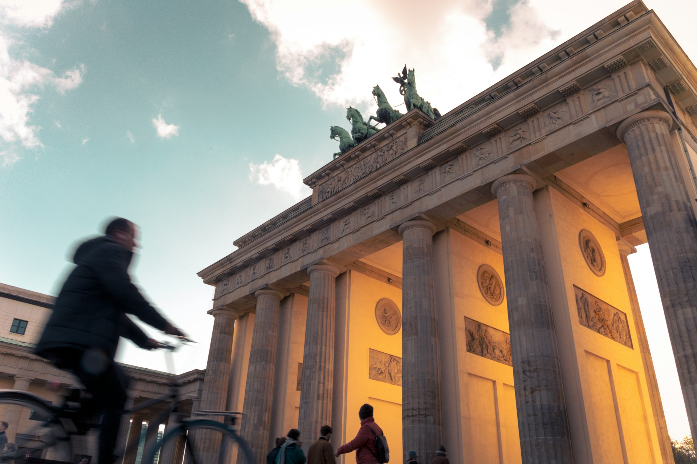
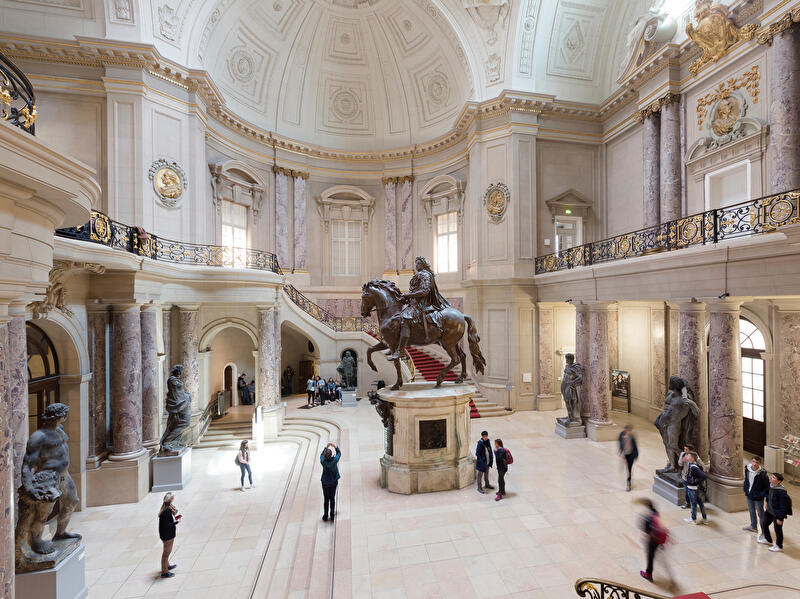
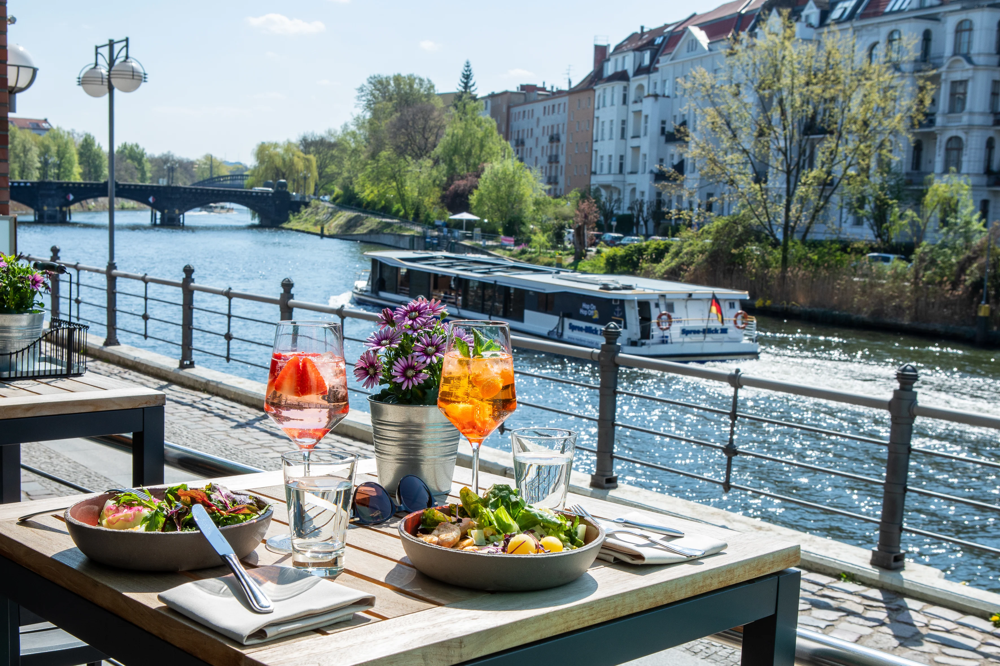

Brandenburg Gate — Where History Opens Its Arms
“Standing beneath its arches, I feel Berlin’s past and present meeting in the same breath.”
Three Must-Try Paths Into Berlin’s Heart
Berlin is a blend of history, creativity, and everyday life. You’ll walk past grand monuments, stumble upon bold street art, and meet people who’ve turned this city into a home shaped by diversity and resilience. That’s what makes Berlin so magnetic — it’s a place that doesn’t hide its past, yet constantly reinvents itself.

Museum Island — Where Time Pauses to Speaks
“Wandering through ancient halls, I lose track of hours and step into stories centuries old.”
Berlin’s creative spirit pulses through every corner—inside grand museums, across abandoned factories turned galleries, and along streets covered in evolving murals. From ancient treasures on Museum Island to spontaneous performances in hidden courtyards, the city blurs the lines between traditional and experimental. Art here isn’t just displayed—it’s lived, shared, argued about, and constantly reinvented. Creativity feels like part of the air you breathe.

Berlin Riverside — Where Days Flow Into Evenings
“Sipping coffee by the river, I watch the city’s rhythm shift from calm afternoons to glowing nights.”
Days in Berlin move slowly and warmly—coffee in neighborhood cafés, long riverside walks, and the easy rhythm of local life. But when evening arrives, the city switches tempo. Bars hum with conversations, music fills unexpected alleys, and iconic clubs come alive until the next morning. Berlin’s lifestyle is a balance of calm and chaos, perfect for travelers who enjoy soft days and electric nights in equal measure.